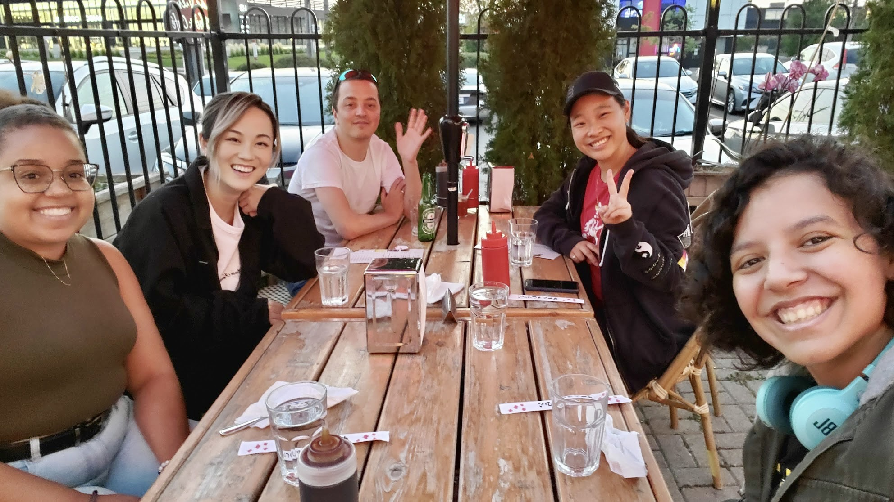

Descriptions:
Developed and maintained internal applications that support business workflows for line managers using a variety of tools and latest technologies.
Skills:
UML graph design; Angular Framework; ASP.NET; SQL Server; LINQ Query;
Descriptions:
Paticipated in the implementation of an internal insurance system, worked on both frontend and backend.
Skills:
Mockup design; Vue.js; Django; MySQL; SpringBoot;